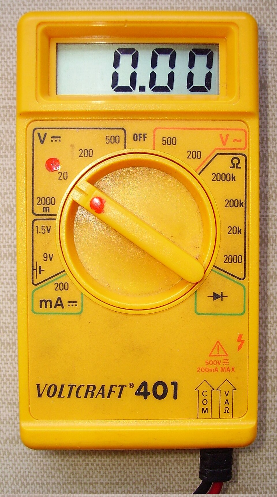
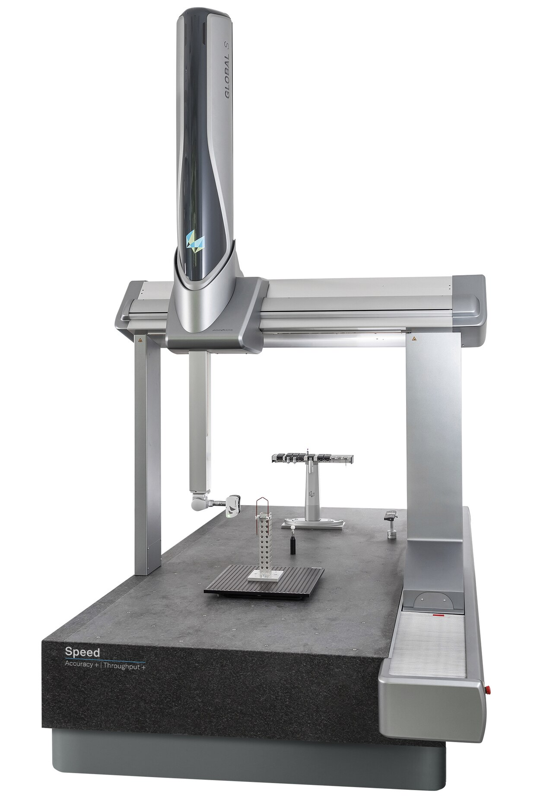
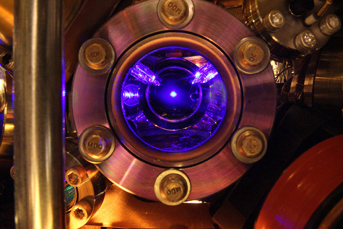
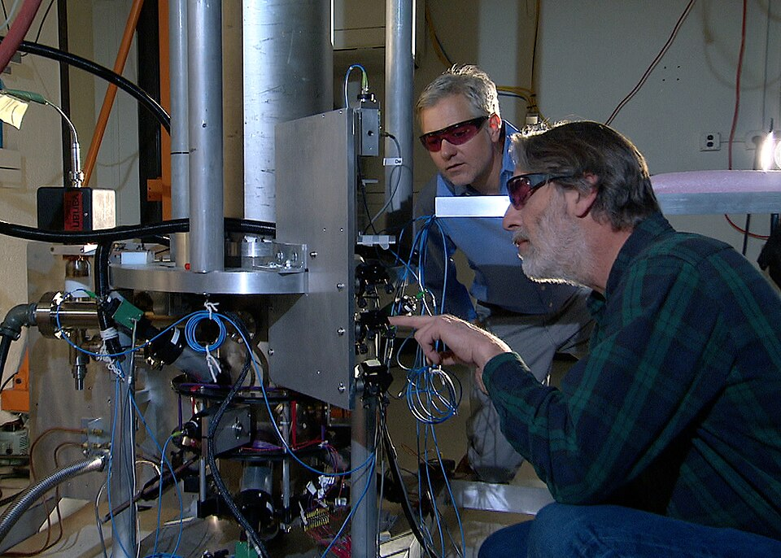
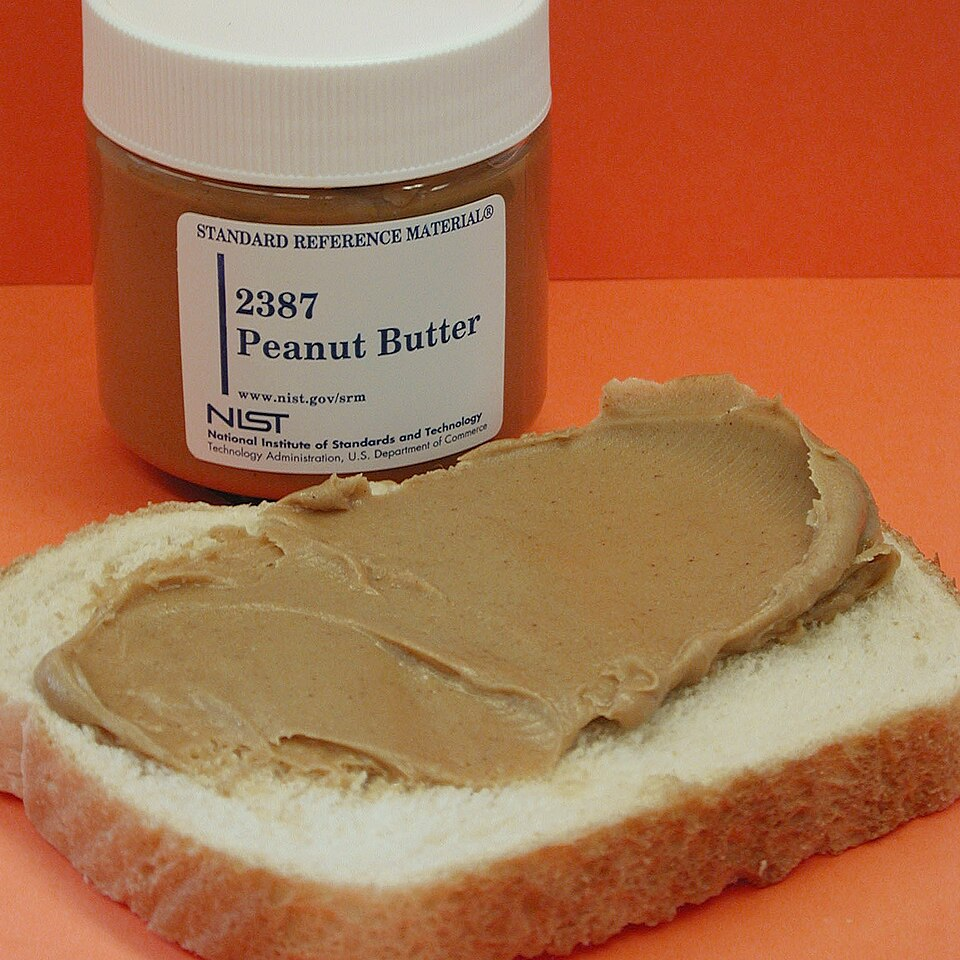

Материалы к лекциям · Описания изображений
Источники фотографий: описания по-русски
Русские описания четырнадцати фотографий измерительных приборов и эталонов с авторством и лицензиями.
Описания фотографий и права использования
Ниже переведены содержательные описания фотографий и сведения об авторстве и лицензиях, используемые в лекциях. Журнал загрузок, перечни других сайтов, EXIF и элементы интерфейса фотохранилища не включены. Фотографии уже находятся в пособии и открываются без сети.
Набор концевых мер длины

Набор метрических концевых мер длины. Размер указан под каждой мерой. Например, в левом нижнем углу находятся две защитные меры толщиной 2 мм. Русское описание карточки указывает диапазон мер от 0,5 до 100 мм.
Автор: Glenn McKechnie. Дата: 26 марта 2005 года. Права: CC BY-SA 3.0. Изменения изображения в пособии: Уменьшение разрешения; без кадрирования.
Карточка оригинала на Wikimedia Commons · Лицензия по-русски

Магазин сопротивлений

Магазин сопротивлений постоянного тока Р-33, изготовленный Краснодарским заводом измерительных приборов (ЗИП), СССР, в 1964 году. Шесть декад; устанавливаемое сопротивление от 0,1 до 99 999,9 Ом. В русской карточке указан класс точности 0,2/6×10⁶.
Автор: Вячеслав Митрофанов. Дата: 11 марта 2014 года. Права: CC BY-SA 3.0. Изменения изображения в пособии: Уменьшение разрешения; без кадрирования.
Карточка оригинала на Wikimedia Commons · Лицензия по-русски

Стрелочный вольтметр

Аналоговый вольтметр Gossen, P., & Co.
Автор: Amfeli. Дата: 17 марта 2020 года. Права: CC BY 4.0. Изменения изображения в пособии: Уменьшение разрешения; без кадрирования.
Карточка оригинала на Wikimedia Commons · Лицензия по-русски

Цифровой мультиметр

Цифровой мультиметр, модель Voltcraft 401.
Автор: Cjp24. Дата: 10 ноября 2011 года. Права: CC BY-SA 3.0. Изменения изображения в пособии: Уменьшение разрешения; без кадрирования.
Карточка оригинала на Wikimedia Commons · Лицензия по-русски

Регистрирующий прибор

Пишущий узел линейного самописца. Название файла Linienschreiber Schreibstift означает «пишущий элемент линейного самописца».
Русский перевод названия файла; дополнительных технических характеристик по названию не выводим.
Автор: Rolandhoernig. Права: общественное достояние. Изменения изображения в пособии: Без кадрирования; разрешение предварительного просмотра Wikimedia Commons.

Координатно-измерительная машина

Координатно-измерительная машина. Название файла указывает модель Hexagon MI GLOBAL S 12×10 SPEED и вид спереди.
Автор: Genialowiki. Дата: 7 июля 2021 года. Права: CC BY-SA 4.0. Изменения изображения в пособии: Без кадрирования; разрешение предварительного просмотра Wikimedia Commons.
Карточка оригинала на Wikimedia Commons · Лицензия по-русски

Весы Киббла

Ватт-весы Национального института стандартов и технологий США (NIST) — экспериментальная установка для очень точного измерения массы. Колпак вакуумной камеры над прибором опускается во время работы, обеспечивая вакуум. Весы измеряют массу, связывая её с атомными единицами, постоянной Планка и скоростью света. Установка разрабатывается для создания более точного эталона массы. В историческом описании карточки действующим первичным эталоном назван Международный прототип килограмма — платиноиридиевый цилиндр в хранилище в Севре, Франция. Как материальный объект он подвержен повреждению и изменению состояния; выявлялось изменение его массы. После завершения разработки предполагалось «взвесить» прототип с помощью ватт-весов, определив килограмм через атомные величины без необходимости в материальном прототипе и получив «электронное» определение килограмма.
Автор: Richard Steiner. Права: CC BY-SA 3.0. Изменения изображения в пособии: Уменьшение разрешения без кадрирования.
Карточка оригинала на Wikimedia Commons · Лицензия по-русски

Массив переходов Джозефсона

Эталон напряжения 1 В, разработанный NIST, который до 1988 года назывался Национальным бюро стандартов (NBS). Он основан на массиве из 3020 сверхпроводящих переходов Джозефсона, работающих при температуре жидкого гелия. Микроволновая энергия подаётся в структуру слева и создаёт напряжение на четырёх цепочках переходов справа.
Автор: Национальное бюро стандартов США (NBS). Права: общественное достояние. Изменения изображения в пособии: Уменьшение разрешения без кадрирования.

Ячейка тройной точки воды

Стеклянная ячейка для воспроизведения тройной точки воды по Международной температурной шкале 1990 года (МТШ-90). Наружный диаметр — 30 мм.
Автор: Marián Hubinský. Права: CC BY-SA 4.0. Изменения изображения в пособии: Уменьшение разрешения без кадрирования.
Карточка оригинала на Wikimedia Commons · Лицензия по-русски

Оптический стандарт частоты

Создание стронциевых оптических атомных часов JILA стало возможным благодаря частотной гребёнке.
Автор: Группа Е (Ye group) и Брэд Бэксли (Brad Baxley), JILA. Права: общественное достояние. Изменения изображения в пособии: Уменьшение разрешения без кадрирования.

Цезиевый фонтан NIST-F2

Физики NIST Стив Джеффертс (на переднем плане) и Том Хевнер рядом с цезиевыми фонтанными атомными часами NIST-F2 — новым на момент публикации гражданским эталоном времени США.
Автор: Национальный институт стандартов и технологий США (NIST), физическая лаборатория, отдел времени и частоты. Права: общественное достояние. Изменения изображения в пособии: Уменьшение разрешения без кадрирования.

Калибратор сопротивления

Калибратор сопротивления Fluke 5450A.
Автор: Dave Jones, Австралия. Права: CC BY 2.0. Изменения изображения в пособии: Уменьшение разрешения без кадрирования.
Карточка оригинала на Wikimedia Commons · Лицензия по-русски
.jpg){kind=link}
Стандартный образец состава NIST SRM 2387

«Насыщенная, нежная, стандартная… Измерения важны для точной маркировки пищевых продуктов и их безопасности». На фотографии — стандартный образец арахисовой пасты NIST SRM 2387.
Автор: NOAA / NIST. Права: общественное достояние. Изменения изображения в пособии: Уменьшение разрешения без кадрирования.

Материальные меры массы

Метрические эталоны массы: набор, распространявшийся среди штатов США.
Автор: Национальный институт стандартов и технологий США (NIST). Права: общественное достояние. Изменения изображения в пособии: Уменьшение разрешения без кадрирования.

Как читать сведения о лицензиях
«Общественное достояние» означает, что карточка помечает фотографию как не охраняемую авторским правом в указанной юрисдикции. Это не отменяет возможных иных прав. CC BY требует указания авторства, ссылки на лицензию и обозначения изменений. CC BY-SA дополнительно требует распространения переработанного материала на тех же или совместимых условиях. Точные условия и версию лицензии следует проверять по русской странице рядом с фотографией.